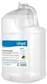
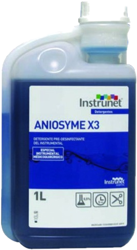

Como sanitizar tus pertenencias
¿Qué es?

La acción de sanitizar un objeto, lugar o cosa, hace referencia a la limpieza de microorganismos y bacterias de estos lugares con el fin de evitar el contagio de una enfermedad potencial, para ello se usan productos denominados sanitizantes los cuales nos hayudan a realizar este proceso.
Un sanitizante, es un compuesto que reduce pero no necesariamente elimina los microorganismos del medio ambiente y objetos inanimados. Son generalmente utilizados en contacto con alimentos. Los sanitizantes son sustancias que reducen el número de microorganismos a un nivel seguro. Debe tener propiedades germicidas o antimicrobianos y se aplican a los objetos no vivos para destruir los microorganismos, de las cuales el proceso que se conoce como la desinfección o sanitización.1
Diferencia con desinfectante

La principal diferencia entre un desinfectante y un sanitizante es que, en un determinado uso de la dilución, el desinfectante debe tener una mayor capacidad para matar bacterias patógenas en comparación con la de un sanitizante. Una versión oficial y legal establece que un sanitizante debe ser capaz de eliminar el 99,999%, conocido como una reducción logarítmica de 5, de una población bacteriana de prueba, y de hacerlo dentro de 30s,2 otra diferencia entre sanitizante y desinfectante es que el sanitizante no es capaz de destruir esporas o virus.
Recomendaciones generales
Hay que remover la suciedad y los desechos, el. sangre, orina, vómito excremento, comida, polvo, o impresiones dactilares restregando y lavando con detergente y agua.La limpieza rutinaria con un detergente líquido para todo uso o con un limpiador abrasivo y agua elimina la suciedad que se puede ver en el local de cuidado infantil. El restregar físicamente reduce el número de gérmenes de las superficies (como cuando uno se lava las manos). Use un trapo descartable o uno que se pueda lavar después de cada uso, para que no transfiera los gérmenes de un lugar a otro. Las esponjas nunca son recomendables.
¿Qué superficies y objetos puede usted limpiar y sanitizar?
- La superficie de la mesa después de comer, la pintura o la arcilla, todo lo que se toca o los libros
- El piso después de comer
- Los escritorios, los libreros, las repisas de los juguetes, las sillas, las ventanas o los lavanderos